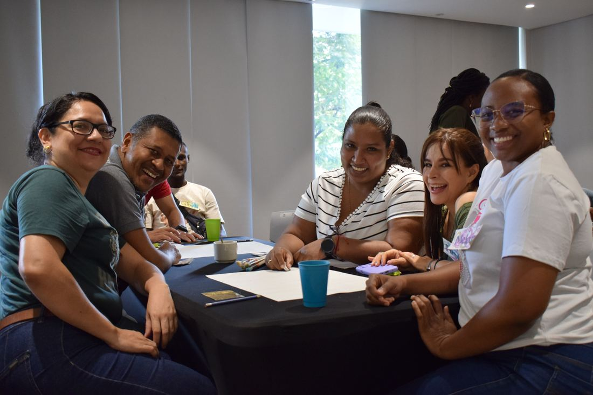
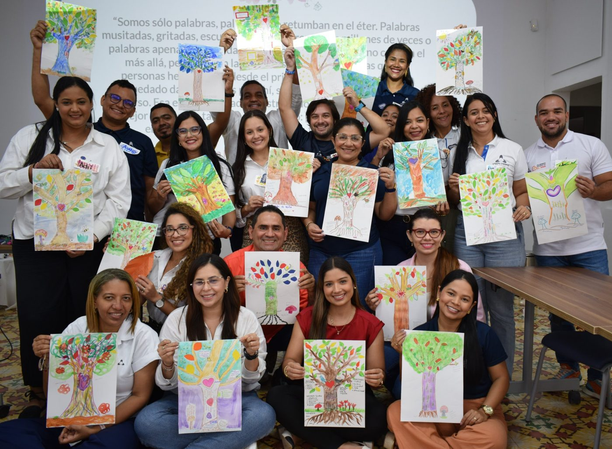
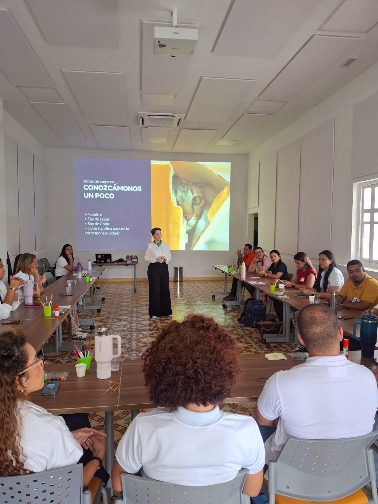
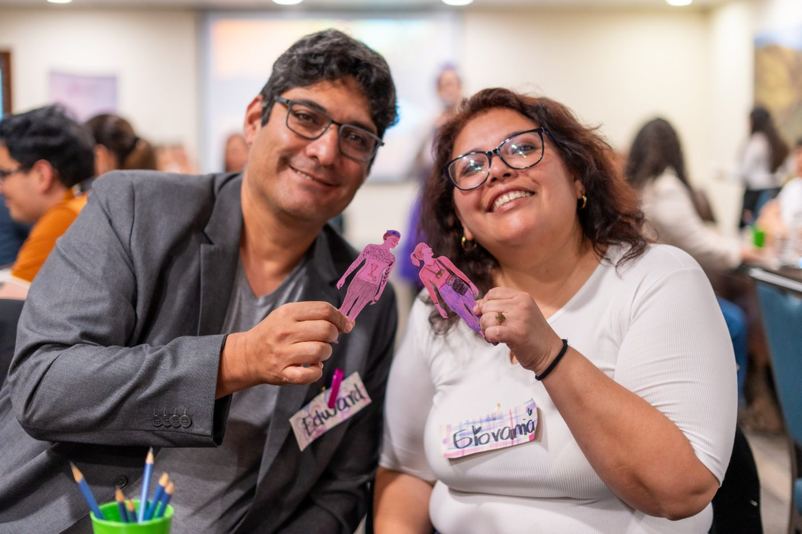

Capacitación en liderazgo y habilidades blandas · Colombia y Latinoamérica
Talleres de liderazgo y habilidades blandas para que tus equipos se comuniquen de verdad.
“Mis líderes y mis equipos no se comunican.”
Si esa frase suena a tu empresa, aquí empieza la conversación. Diseñamos programas de liderazgo, comunicación asertiva, inteligencia emocional y trabajo en equipo donde la gente aprende haciendo, con arte, y medimos lo que cambia.

Lo que vemos en las empresas
Muchas empresas ascienden a su mejor técnico y le entregan un equipo sin manual.
- Líderes que mandan y controlan, pero no logran que su equipo se comprometa.
- Áreas que chocan porque cada una mira la empresa desde su propia ventana.
- Malentendidos que cuestan: reprocesos, conflictos que nadie nombra y gente buena que se va.
- Capacitaciones que se olvidan el lunes siguiente, porque lo que solo se escucha, se olvida.
Tres formas de trabajar
Elige según el tamaño de tu reto.
Una sola sesión para un momento especial, un proceso de seis meses para todo el equipo o una escuela completa para tus líderes. Todas se diseñan con el lenguaje y los retos de tu empresa, presenciales o virtuales.
| Formato | Sesiones | Frecuencia | Grupo | Para quién |
|---|---|---|---|---|
| Escuela de Liderazgo | 12 a 24, de 2 a 3 horas | Cada 8 a 15 días | 6 a 30 líderes | Gerentes, directores y jefes |
| Escuela de Habilidades Blandas | 6, de 4 horas | Una al mes | Equipos de cualquier área | Cualquier perfil de la compañía |
| Talleres de Power Skills | 1, de 2 a 6 horas | Sesión única | 12 a 125 personas | Encuentros, congresos y lanzamientos |
Programa · Modelo humanista
Escuela de Liderazgo
Para que las áreas dejen de chocar y los líderes entiendan cómo afectan a sus equipos.
- Sesiones
- 12 a 24
- Duración
- 2 a 3 horas cada una
- Frecuencia
- Cada 8 a 15 días
- Grupo
- 6 a 30 líderes
Para quién
Gerentes, directores y jefes, en especial quienes llegaron al cargo por ser excelentes en lo técnico y hoy tienen que guiar personas.
Cómo funciona
Encuentros vivenciales en los que los retos reales de la empresa se trabajan a través del arte. Los líderes miran de frente su manera de comunicar, de dar retroalimentación y de mover a su equipo, y con rutinas de pensamiento convierten lo que descubren en acuerdos concretos para el lunes.
Qué se trabaja
- Autoconciencia y reflexión
- Gestión basada en la confianza
- Comunicación transparente
- Retroalimentación
- Delegación y empoderamiento
- Pensamiento sistémico
- Habilidades emocionales y sociales
- Coherencia y compromiso
- Inclusión y diversidad
Qué cambia
Líderes que escuchan, dan retroalimentación y entienden su impacto. Equipos más comprometidos y menos rotación.
Qué medimos
Las conductas de liderazgo, evaluadas por el propio líder y por su equipo, antes y después del programa.
Qué incluye
Todos los materiales, memorias de los temas trabajados, cápsulas de conocimiento para seguir aprendiendo entre sesiones, registros e informe de resultados.
Programa · Todas las áreas
Escuela de Habilidades Blandas
Para que los valores de la empresa se noten en cada conversación del día a día.
- Sesiones
- 6
- Duración
- 4 horas cada una
- Frecuencia
- Una al mes
- Para quién
- Cualquier perfil
Para quién
Equipos de cualquier área y nivel de la compañía: operación, servicio, comercial, administrativo y mandos medios.
Cómo funciona
Una sesión al mes durante seis meses. Cada encuentro convierte un concepto que suele quedarse en la teoría, como la empatía o la escucha, en una experiencia que el equipo vive con las manos y luego traduce a su trabajo. El ritmo mensual le da tiempo a cada aprendizaje de echar raíz antes del siguiente.
Qué se trabaja
- Comunicación asertiva y escucha activa
- Adaptabilidad y gestión del cambio
- Inteligencia emocional
- Trabajo en equipo y colaboración
- Resolución de conflictos
- Organización y gestión del tiempo
- Autoconocimiento
- Creatividad y atención al detalle
- Servicio y experiencia del cliente
Qué cambia
Menos fricciones y malentendidos entre personas y áreas. La inteligencia social se vuelve un motor de productividad: equipos más unidos, menos rotación y procesos que fluyen con más agilidad.
Experiencia focalizada · Sesión única
Talleres de Power Skills
Comunicación, servicio y trabajo en equipo, en una sola sesión de alto impacto.
- Sesiones
- 1
- Duración
- 2 a 6 horas
- Grupo
- 12 a 125 personas
- Modalidad
- Presencial o virtual
Para qué sirve
Para una necesidad específica que no da espera, o para un momento en el que toda la gente está reunida y conviene que viva algo que recuerde.
Momentos en los que funciona
- Encuentros corporativos y jornadas de integración
- Congresos y convenciones
- Reuniones de lanzamiento
- Presentación de nuevos protocolos o procesos en la compañía
Temas
- Comunicación
- Servicio
- Trabajo en equipo
Un buen primer paso
Si nunca has trabajado con Simoné, un taller de Power Skills le muestra a tu equipo y a tu gerencia cómo se siente aprender así, antes de decidir un programa más largo.
Cómo es una sesión · Método El Borde Visible™
Nadie tiene que saber pintar. Todos tienen algo que decir.
El arte no es el tema: es el puente. Hace visible lo que en una charla se queda en el aire, y eso que se ve se puede conversar, acordar y medir.
- Acción · Dewey
Se aprende haciendo
El equipo enfrenta un reto real de su empresa con las manos ocupadas: un retrato, un mapa, un juego, una pieza colectiva.
- Expresión · Arte
Lo que no se dice, se ve
La obra muestra cómo se comunica el equipo, dónde se atasca y qué siente. Lo invisible queda sobre la mesa.
- Estructura · Harvard Project Zero
Lo que se ve, se acuerda
Rutinas de pensamiento convierten lo descubierto en acuerdos concretos que el equipo se lleva a su trabajo.
Algunas experiencias de nuestro repertorio
- Retratos dirigidos
- Pájaros: encontrando la palabra justa
- Seis sombreros para pensar
- El árbol, radiografía de una organización
- Mapa de Johari
- Los tres músicos
- El viaje del cliente
- El espejo: confianza



Lo que dicen los líderes
Liderar desde un lugar más consciente.
143personas respondieron nuestra encuesta después de su experiencia. Las 143 recomendarían a Simoné.
En lo personal, aprendí a escucharme con mayor compasión y claridad; y en lo profesional, a liderar desde un lugar más consciente y empático.
-
La importancia de identificar nuestro lado humanista en la forma de liderar a nuestros grupos de trabajo.
Libia del Socorro QuinteroNueva EPS · Líderes asumiendo desafíos
-
Cada persona tiene visiones diferentes de la organización y sus desafíos. Lo interesante es armonizarlo todo para, desde la individualidad, construir en conjunto.
Lina María AceroSociedad Entorno y Compañía
-
Nos ayuda a reconocernos, valorar lo que nos rodea y motivarnos para el trabajo en equipo.
Diana María ÁlvarezProductos Alimenticios Doria
También han confiado en nosotros: Nueva EPS · Cámara de Comercio de Cartagena · Fundación Santa Fe de Bogotá · BNP Paribas · Bancoldex · Doria
Preguntas frecuentes
Lo que nos preguntan antes de empezar.
¿Los talleres son presenciales o virtuales?
Los dos. Las experiencias se diseñan para hacerse en la sede de tu empresa, en un lugar externo o en línea, y los materiales llegan a cada participante, en Colombia o en otro país.
¿Trabajan solo en Bogotá?
No. Nuestra base está en Bogotá y viajamos a donde está tu equipo: hemos llevado nuestras experiencias a Medellín, Cali, Barranquilla, Cartagena, Pasto e Ibagué, y fuera de Colombia a Perú y Ecuador. De forma virtual hemos trabajado con equipos en México, República Dominicana y Costa Rica.
¿Los participantes necesitan saber de arte?
No. Nadie tiene que saber pintar ni dibujar. El arte es la herramienta para que el equipo vea y converse lo que normalmente no se dice; lo importante es lo que cada persona descubre, no lo bonito que quede.
¿Se adapta a los valores y retos de mi empresa?
Sí. Antes de empezar escuchamos qué quieres que cambie y cocreamos la experiencia con el lenguaje, los valores y los retos reales de tu empresa.
¿Cómo se mide el resultado?
Cada proceso incluye medición de conocimiento e impacto. En la Escuela de Liderazgo, el líder y su equipo evalúan las conductas de liderazgo antes y después, y al final recibes un informe con resultados y recomendaciones.
¿Cuál formato le conviene a mi empresa?
Depende del tamaño del reto. Un taller de Power Skills sirve para un momento puntual o como primer paso; la Escuela de Habilidades Blandas, para un cambio sostenido en todo el equipo; la Escuela de Liderazgo, para transformar cómo lideran tus jefes. Si no lo tienes claro, el diagnóstico gratuito te ayuda a decidir.
Por dónde empezar
¿No sabes cuál formato necesita tu equipo?
Haz el diagnóstico en 5 minutos y recibe un informe con tu punto de partida. O escríbenos y en 30 minutos de conversación te decimos con honestidad qué te sirve.
Volver al inicio